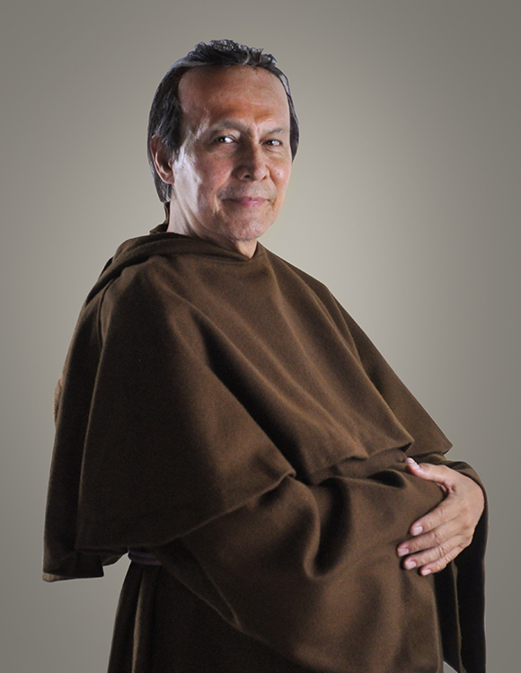
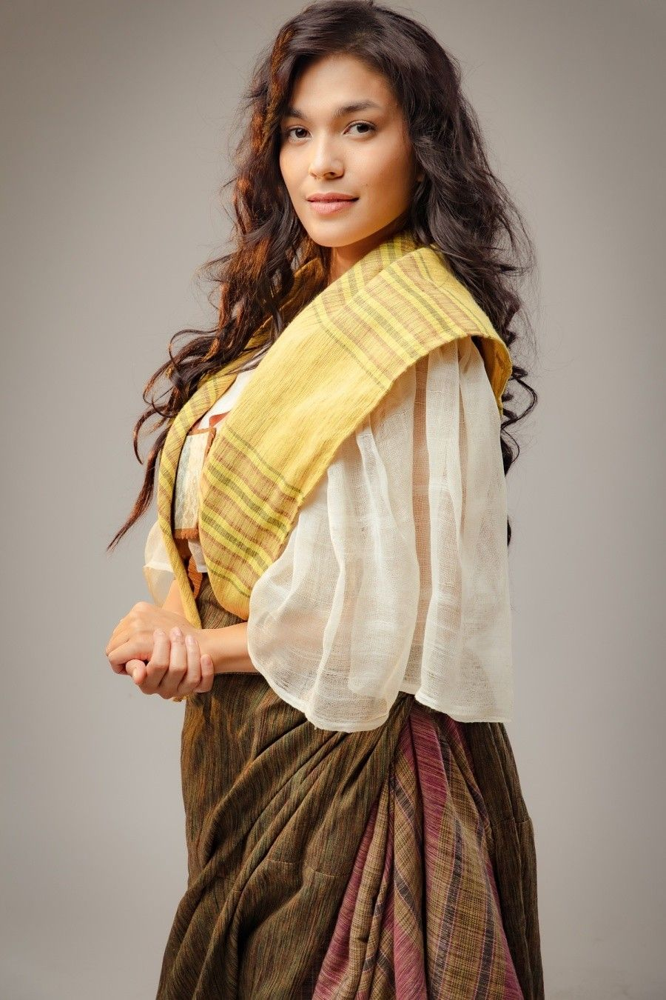
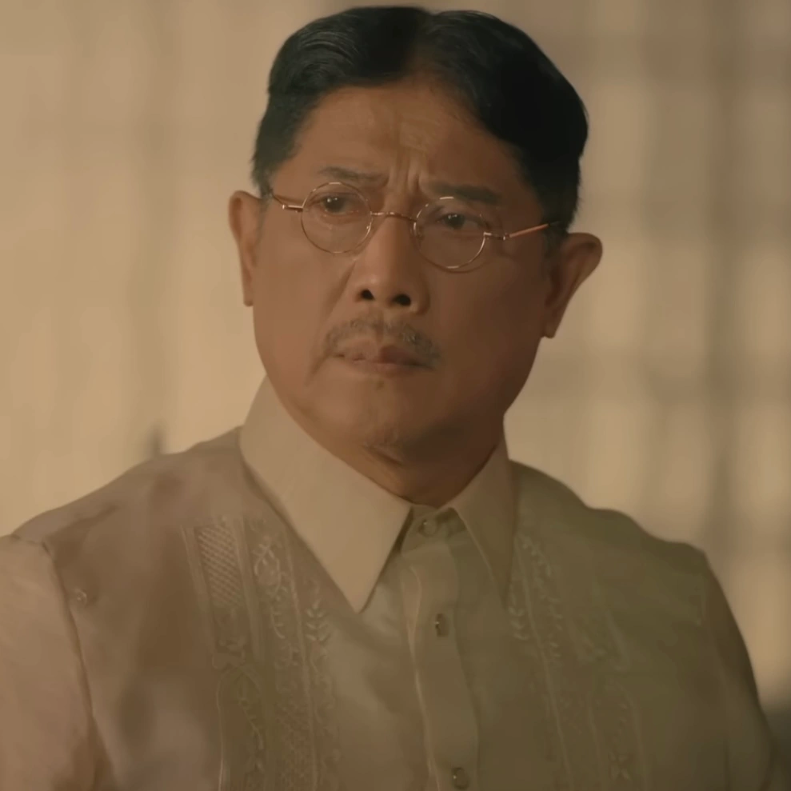
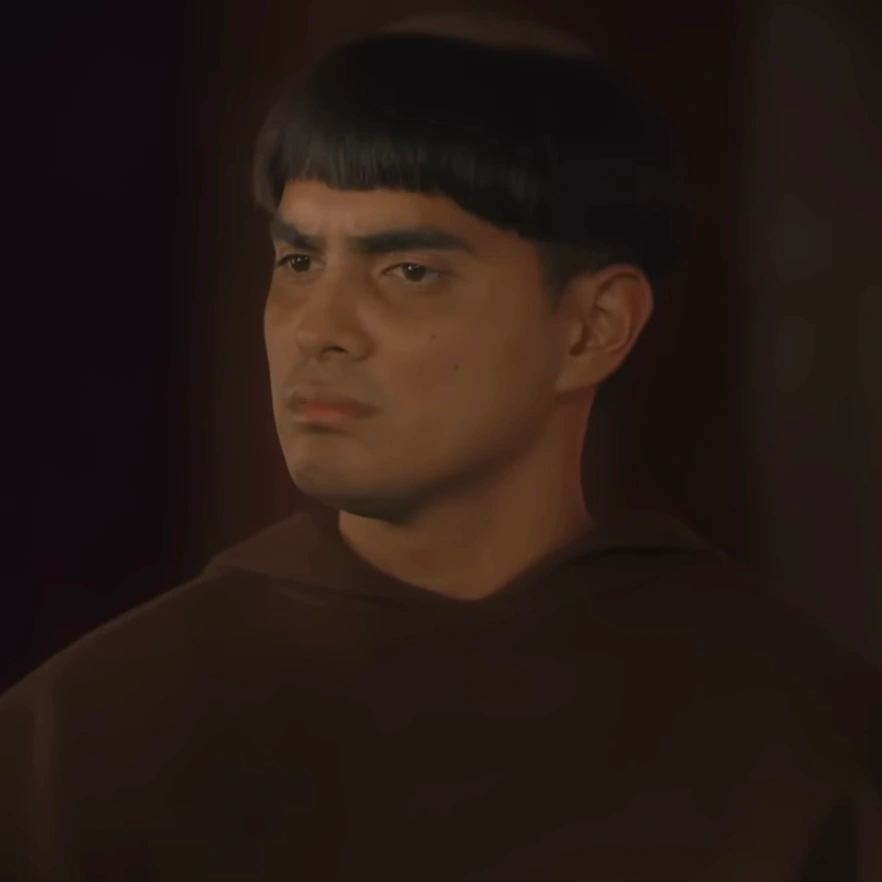

|
Crisostomo Ibarra | He is a young, idealistic Filipino who returns to his hometown of San Diego after studying in Europe.He iswell-educated, progressive, and open-minded. | |
Maria Clara | She is gentle, graceful, and virtuous, representing the idealized image of a Filipino woman in her era. She is known for her beauty and her skills in music and the arts. |
|  | Padre Damaso | He is an arrogant, corrupt, and abusive of his power. Central antagonist of the novel. |
|  | Sisa | She is a poor woman and the mother of Crispin and Basilio. Sisa is a loving and devoted mother who cares deeply for her children |
|
Crispin | He is one of Sisa's two sons. Crispin is a young, timid, and obedient boy. |
|
Basilio | He is one of Sisa's two sons. Basilio is as more resourceful and resilient compared to his younger brother. |
|  | Kapitan Tiago | He is a generous and benevolent character, but he is also somewhat naive and easily influenced by the Spanish friars and colonial authorities. |
|  | Padre Salvi | He is a cunning, manipulative, and power-hungry figure within the Church. |
|
Pilosopo Tasyo | He is a man of intellect and wisdom, but he is considered crazy and unconventional by the people of San Diego. |
|
Tenyente Guevarra | He holds the rank of lieutenant in the Spanish colonial administration and is depicted as a just and reasonable official. |
|
Don Filipo Lino | He is a wealthy Filipino who owns a large estate and is a close friend of Ibarra. He is a kind and generous man who uses his wealth and influence to help those in need. |
References: https://mariaclaraatibarra.fandom.com/wiki/Maria_Clara_At_Ibarra